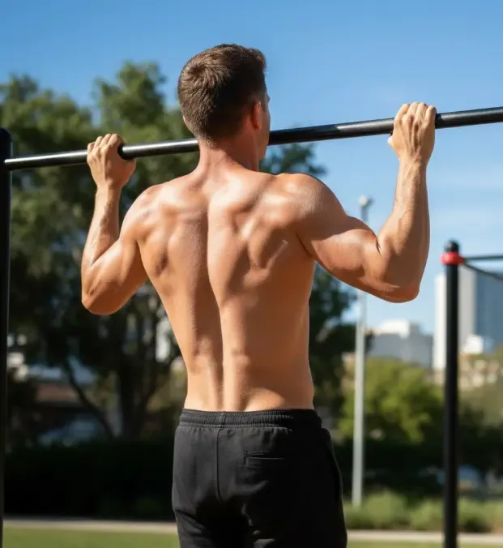
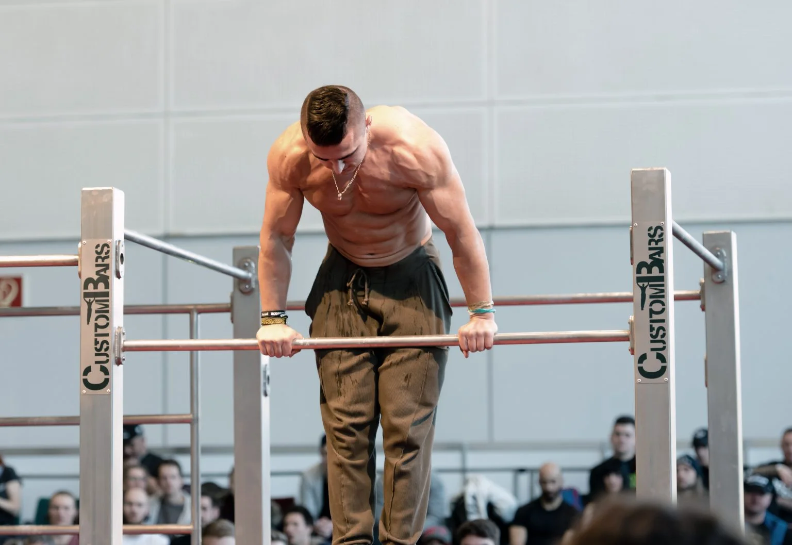
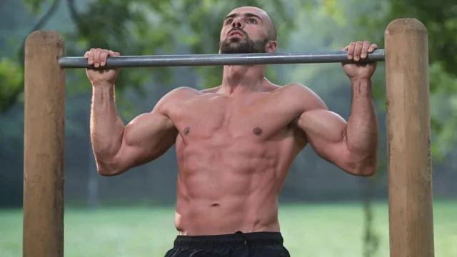
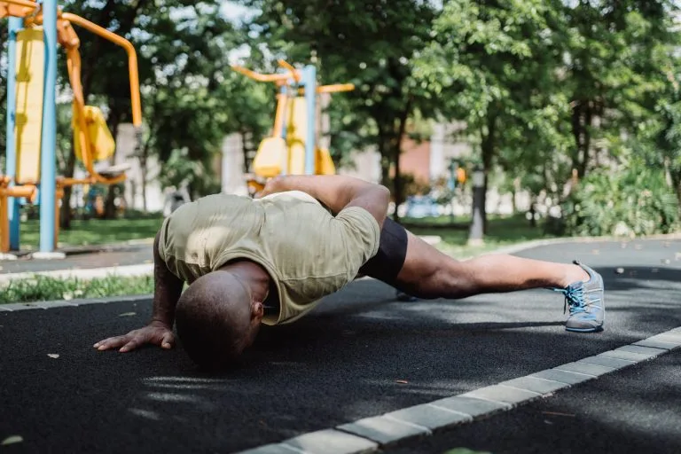
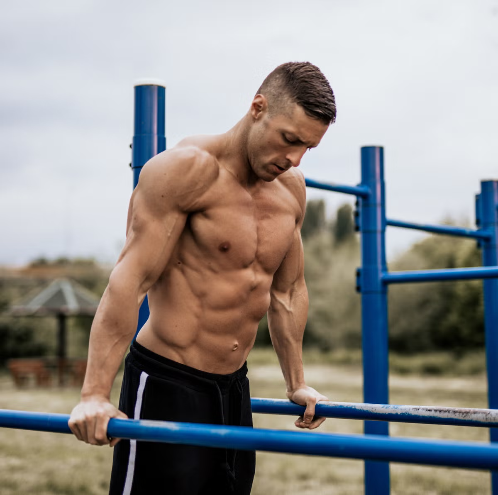
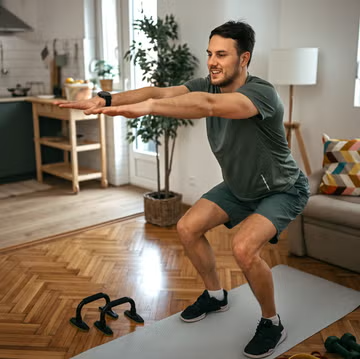
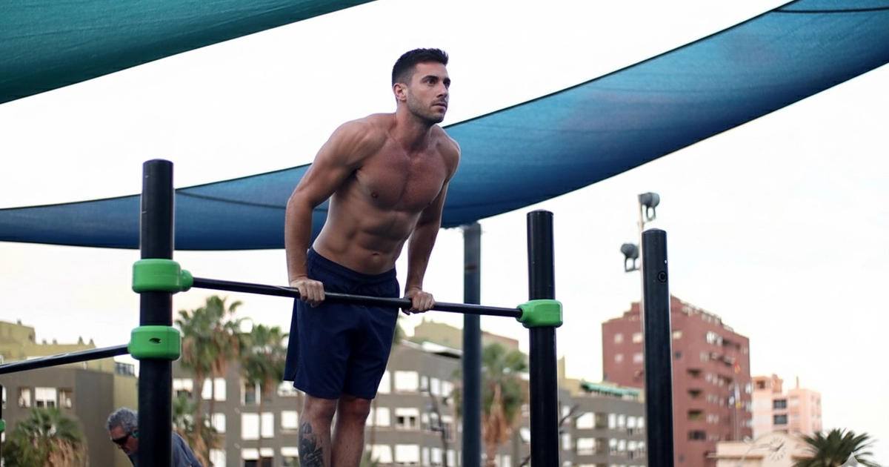
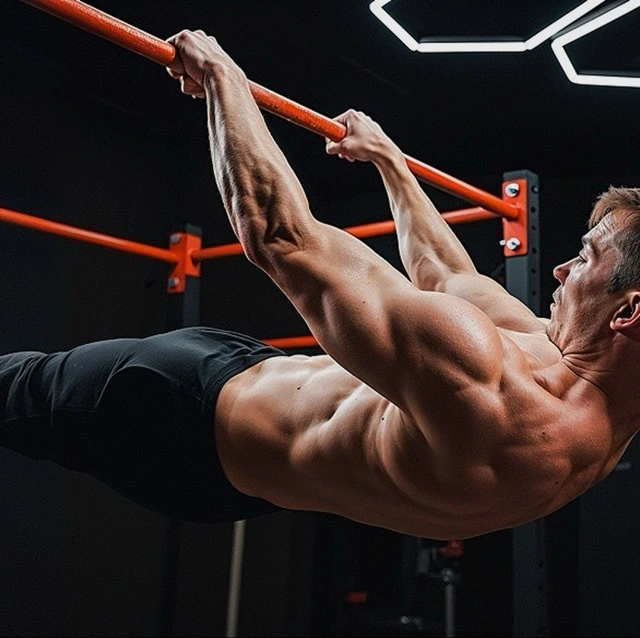
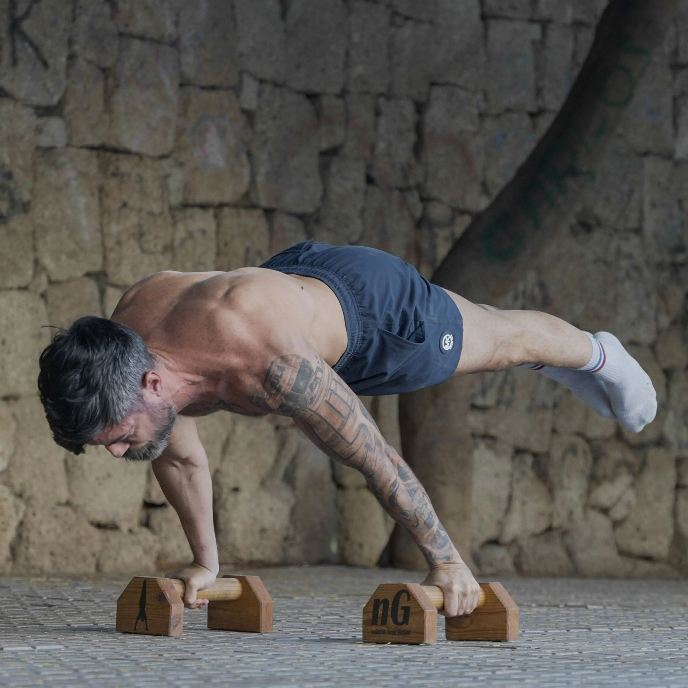
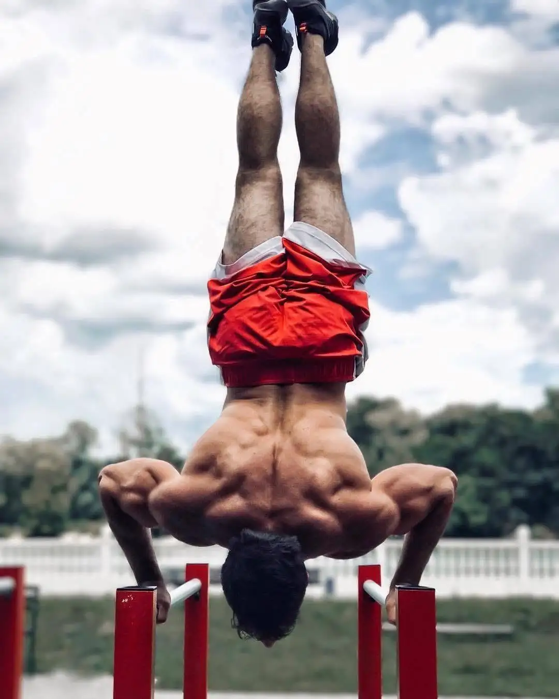

Sin costo
No necesitás gimnasio ni equipamiento caro. Una barra en el parque o el suelo es suficiente para entrenar todo el cuerpo.
Street Workout & Fuerza Corporal
Entrená con tu propio peso. Sin gimnasio. Sin límites.

La calistenia es el sistema de entrenamiento que usa el propio peso corporal como resistencia. Pero es mucho más que eso: es un estilo de vida basado en ejercicios de empuje (push), arrastre (pull) y tensión que trabajan grandes grupos musculares.
Sus raíces vienen del griego kalos (belleza) y sthenos (fuerza). Hoy se practica en parques, calles y gimnasios de todo el mundo bajo el nombre de Street Workout.
Ver beneficios
Ventajas reales frente a otros métodos de entrenamiento.
No necesitás gimnasio ni equipamiento caro. Una barra en el parque o el suelo es suficiente para entrenar todo el cuerpo.
Parque, casa, playa o viaje. Tu cuerpo siempre está con vos y es todo lo que necesitás para entrenar.
Desarrollás fuerza real que se traduce en movimientos del día a día, no solo músculos estéticos.
Mejorás el equilibrio, la coordinación y la conciencia corporal de forma progresiva y natural.
Desde flexiones básicas hasta el muscle up o la planche. Siempre hay un siguiente nivel que alcanzar.
El trabajo con peso corporal es más amigable con las articulaciones que el entrenamiento con cargas externas pesadas.
Los movimientos fundamentales con los que todo comienza.

El ejercicio rey de la calistenia. Trabaja dorsales, bíceps y core. Base para habilidades avanzadas como el muscle up.

Pecho, tríceps y hombros en un solo movimiento. Existen decenas de variantes para todos los niveles.

En barras paralelas o en silla. Trabaja tríceps, pecho inferior y hombros con gran rango de movimiento.

La base del tren inferior. Cuádriceps, glúteos y femorales. La progresión natural lleva a la sentadilla en una pierna (pistol squat).
Los movimientos que demuestran el poder del entrenamiento con peso corporal.

Combinación de dominada explosiva y fondo. El primer gran objetivo de todo practicante de calistenia.
Intermedio
Posición horizontal suspendido de una barra. Exige una fuerza de core y dorsales extraordinaria.
Avanzado
El cuerpo horizontal en el aire solo con los brazos. Uno de los movimientos más difíciles de la calistenia.
Élite
El pino. Control total del equilibrio invertido. Base de la calistenia estática y la gimnasia artística.
AvanzadoLa calistenia tiene una progresión clara. Encontrá tu punto de partida.